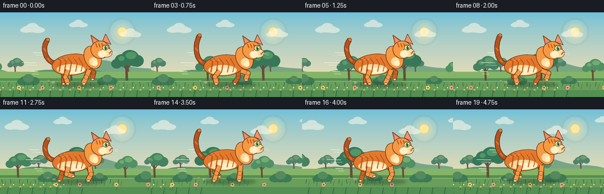
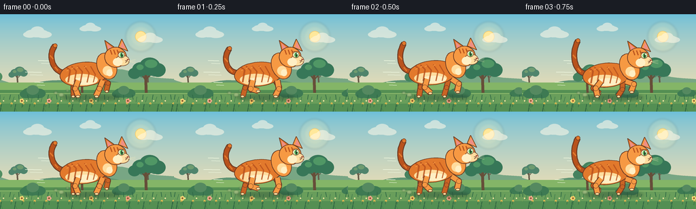

CODING AGENTS AS PIXEL WORLD MODELS
traex/DeepSeek-V4.1-Flash · instance_preservation_0003
点击播放 · 原生 RGB 像素
逐轮保存的候选
回放视频、检查图与代码变化。
每份候选均可单独播放。实际图片检查记录在下方工具轨迹中。
候选 01播放与检查图
点击播放 · 原生 RGB 像素

展开代码变化
--- 上一保存版本
+++ 本次保存版本
@@ -0,0 +1,596 @@
+"""Procedural RGB animation for the prompt: "An orange cat is running."
+
+The scene is drawn at 4x resolution and reduced with Lanczos filtering. The
+cat is kept in a strong side-view silhouette while the park layers scroll to
+make the short clip read as continuous motion.
+"""
+
+from __future__ import annotations
+
+import math
+from pathlib import Path
+
+import numpy as np
+from PIL import Image, ImageDraw, ImageFilter
+
+import artifact_io
+
+
+W, H = 256, 144
+N = 20
+FPS = 4.0
+S = 4
+SW, SH = W * S, H * S
+HERE = Path(__file__).resolve().parent
+
+
+def sc(value: float) -> int:
+ return int(round(value * S))
+
+
+def pt(point: tuple[float, float]) -> tuple[int, int]:
+ return sc(point[0]), sc(point[1])
+
+
+def points(values: list[tuple[float, float]]) -> list[tuple[int, int]]:
+ return [pt(value) for value in values]
+
+
+def lerp(a: float, b: float, t: float) -> float:
+ return a + (b - a) * t
+
+
+def mix(a: tuple[int, int, int], b: tuple[int, int, int], t: float) -> tuple[int, int, int]:
+ return tuple(int(round(lerp(a[k], b[k], t))) for k in range(3))
+
+
+def ellipse(
+ draw: ImageDraw.ImageDraw,
+ center: tuple[float, float],
+ radii: tuple[float, float],
+ fill: tuple[int, int, int] | tuple[int, int, int, int] | None = None,
+ outline: tuple[int, int, int] | tuple[int, int, int, int] | None = None,
+ width: float = 1.0,
+) -> None:
+ x, y = center
+ rx, ry = radii
+ draw.ellipse(
+ (sc(x - rx), sc(y - ry), sc(x + rx), sc(y + ry)),
+ fill=fill,
+ outline=outline,
+ width=max(1, sc(width)),
+ )
+
+
+def polygon(
+ draw: ImageDraw.ImageDraw,
+ values: list[tuple[float, float]],
+ fill: tuple[int, int, int] | tuple[int, int, int, int] | None = None,
+ outline: tuple[int, int, int] | tuple[int, int, int, int] | None = None,
+ width: float = 1.0,
+) -> None:
+ p = points(values)
+ draw.polygon(p, fill=fill)
+ if outline is not None:
+ draw.line(p + [p[0]], fill=outline, width=max(1, sc(width)), joint="curve")
+
+
+def line(
+ draw: ImageDraw.ImageDraw,
+ values: list[tuple[float, float]],
+ fill: tuple[int, int, int] | tuple[int, int, int, int],
+ width: float,
+ joint: str = "curve",
+) -> None:
+ draw.line(points(values), fill=fill, width=max(1, sc(width)), joint=joint)
+
+
+def circle(
+ draw: ImageDraw.ImageDraw,
+ center: tuple[float, float],
+ radius: float,
+ fill: tuple[int, int, int] | tuple[int, int, int, int],
+ outline: tuple[int, int, int] | tuple[int, int, int, int] | None = None,
+ width: float = 1.0,
+) -> None:
+ ellipse(draw, center, (radius, radius), fill, outline, width)
+
+
+def rotated_ellipse_points(
+ center: tuple[float, float],
+ radii: tuple[float, float],
+ angle_deg: float,
+ count: int = 64,
+) -> list[tuple[float, float]]:
+ cx, cy = center
+ rx, ry = radii
+ angle = math.radians(angle_deg)
+ c, s = math.cos(angle), math.sin(angle)
+ result = []
+ for index in range(count):
+ theta = 2.0 * math.pi * index / count
+ x = rx * math.cos(theta)
+ y = ry * math.sin(theta)
+ result.append((cx + x * c - y * s, cy + x * s + y * c))
+ return result
+
+
+def bezier(
+ p0: tuple[float, float],
+ p1: tuple[float, float],
+ p2: tuple[float, float],
+ p3: tuple[float, float],
+ count: int = 28,
+) -> list[tuple[float, float]]:
+ result = []
+ for index in range(count):
+ t = index / (count - 1)
+ u = 1.0 - t
+ result.append(
+ (
+ u**3 * p0[0] + 3 * u**2 * t * p1[0] + 3 * u * t**2 * p2[0] + t**3 * p3[0],
+ u**3 * p0[1] + 3 * u**2 * t * p1[1] + 3 * u * t**2 * p2[1] + t**3 * p3[1],
+ )
+ )
+ return result
+
+
+def ik_knee(
+ base: tuple[float, float],
+ target: tuple[float, float],
+ length_a: float,
+ length_b: float,
+ bend: float,
+) -> tuple[float, float]:
+ dx, dy = target[0] - base[0], target[1] - base[1]
+ distance = max(0.01, math.hypot(dx, dy))
+ distance = min(distance, length_a + length_b - 0.01)
+ along = (length_a * length_a - length_b * length_b + distance * distance) / (2.0 * distance)
+ height = math.sqrt(max(0.0, length_a * length_a - along * along))
+ ux, uy = dx / max(distance, 0.01), dy / max(distance, 0.01)
+ mid = (base[0] + ux * along, base[1] + uy * along)
+ return (mid[0] - uy * height * bend, mid[1] + ux * height * bend)
+
+
+def draw_gradient() -> Image.Image:
+ top = np.array((107, 191, 218), dtype=np.float32)
+ bottom = np.array((255, 226, 175), dtype=np.float32)
+ rows = np.linspace(0.0, 1.0, SH, dtype=np.float32)[:, None, None]
+ rows = rows**0.72
+ rgb = top[None, None, :] * (1.0 - rows) + bottom[None, None, :] * rows
+ rgb = np.repeat(rgb, SW, axis=1).astype(np.uint8)
+ return Image.fromarray(rgb, "RGB")
+
+
+def draw_soft_ellipse(
+ image: Image.Image,
+ center: tuple[float, float],
+ radii: tuple[float, float],
+ color: tuple[int, int, int],
+ alpha: int,
+ blur: float = 0.0,
+) -> None:
+ layer = Image.new("RGBA", image.size, (0, 0, 0, 0))
+ draw = ImageDraw.Draw(layer)
+ ellipse(draw, center, radii, (*color, alpha))
+ if blur:
+ layer = layer.filter(ImageFilter.GaussianBlur(sc(blur)))
+ image.alpha_composite(layer) if image.mode == "RGBA" else image.paste(
+ Image.alpha_composite(image.convert("RGBA"), layer).convert("RGB")
+ )
+
+
+def composite_rgba(base: Image.Image, layer: Image.Image) -> Image.Image:
+ return Image.alpha_composite(base.convert("RGBA"), layer).convert("RGB")
+
+
+def draw_clouds(image: Image.Image, offset: float) -> Image.Image:
+ layer = Image.new("RGBA", image.size, (0, 0, 0, 0))
+ draw = ImageDraw.Draw(layer)
+ clouds = [
+ (-24, 28, 1.00),
+ (54, 20, 0.75),
+ (142, 36, 0.88),
+ (221, 18, 0.66),
+ ]
+ for base_x, y, scale in clouds:
+ x = ((base_x - offset + 128) % (W + 100)) - 50
+ color = (255, 248, 231, 142)
+ ellipse(draw, (x, y), (17 * scale, 6 * scale), color)
+ ellipse(draw, (x - 10 * scale, y + 2 * scale), (10 * scale, 4.5 * scale), color)
+ ellipse(draw, (x + 10 * scale, y + 2 * scale), (12 * scale, 5 * scale), color)
+ ellipse(draw, (x + 1 * scale, y - 3 * scale), (10 * scale, 7 * scale), color)
+ return composite_rgba(image, layer)
+
+
+def draw_distant_hills(draw: ImageDraw.ImageDraw, offset: float) -> None:
+ # Two rounded ridge bands give the scene depth without competing with the cat.
+ for layer_index, (base_y, amp, color, speed) in enumerate(
+ [
+ (94, 10, (120, 166, 132), 0.38),
+ (103, 7, (96, 148, 115), 0.62),
+ ]
+ ):
+ shift = offset * speed
+ ridge = [(-20, 112)]
+ for x in range(-20, W + 24, 8):
+ wave = math.sin((x + shift) * 0.026 + layer_index * 1.7)
+ wave += 0.34 * math.sin((x + shift) * 0.061 + 0.8)
+ ridge.append((x, base_y + amp * wave))
+ ridge.extend([(W + 24, 124), (-20, 124)])
+ polygon(draw, ridge, color)
+
+
+def draw_tree(
+ draw: ImageDraw.ImageDraw,
+ x: float,
+ base_y: float,
+ scale: float,
+ canopy: tuple[int, int, int],
+ trunk: tuple[int, int, int],
+ accent: tuple[int, int, int],
+) -> None:
+ line(draw, [(x, base_y), (x - 1, base_y - 30 * scale)], trunk, 4.2 * scale)
+ line(draw, [(x, base_y - 17 * scale), (x - 8 * scale, base_y - 29 * scale)], trunk, 2.2 * scale)
+ line(draw, [(x + 1, base_y - 20 * scale), (x + 9 * scale, base_y - 31 * scale)], trunk, 2.0 * scale)
+ blobs = [
+ (x - 8 * scale, base_y - 34 * scale, 12 * scale, 10 * scale),
+ (x + 5 * scale, base_y - 38 * scale, 15 * scale, 13 * scale),
+ (x + 17 * scale, base_y - 33 * scale, 11 * scale, 10 * scale),
+ (x - 17 * scale, base_y - 28 * scale, 9 * scale, 8 * scale),
+ ]
+ for bx, by, rx, ry in blobs:
+ ellipse(draw, (bx, by), (rx, ry), canopy)
+ ellipse(draw, (x + 7 * scale, base_y - 42 * scale), (9 * scale, 6 * scale), accent)
+ ellipse(draw, (x - 9 * scale, base_y - 37 * scale), (5 * scale, 4 * scale), accent)
+
+
+def draw_bush(draw: ImageDraw.ImageDraw, x: float, y: float, scale: float, color: tuple[int, int, int]) -> None:
+ ellipse(draw, (x, y), (15 * scale, 8 * scale), color)
+ ellipse(draw, (x - 9 * scale, y + 2 * scale), (9 * scale, 6 * scale), color)
+ ellipse(draw, (x + 10 * scale, y + 1 * scale), (10 * scale, 7 * scale), color)
+ ellipse(draw, (x + 1 * scale, y - 4 * scale), (9 * scale, 7 * scale), mix(color, (255, 245, 190), 0.12))
+
+
+def draw_background(image: Image.Image, frame_index: int) -> Image.Image:
+ image = draw_clouds(image, frame_index * 2.4)
+ draw = ImageDraw.Draw(image)
+ draw_distant_hills(draw, frame_index * 3.2)
+
+ # Small far-away tree line.
+ for k in range(-1, 4):
+ x = 26 + k * 96 - (frame_index * 5.1) % 96
+ draw_tree(
+ draw,
+ x,
+ 104,
+ 0.52,
+ (79, 132, 108),
+ (102, 91, 73),
+ (111, 155, 112),
+ )
+
+ # The meadow has a warm, sunlit band and a darker foreground band.
+ polygon(
+ draw,
+ [(-10, 101), (W + 10, 101), (W + 10, 126), (-10, 126)],
+ (132, 181, 103),
+ )
+ polygon(
+ draw,
+ [(-10, 112), (W + 10, 112), (W + 10, 144), (-10, 144)],
+ (84, 143, 83),
+ )
+ polygon(
+ draw,
+ [(-10, 118), (W + 10, 118), (W + 10, 132), (-10, 132)],
+ (105, 158, 91),
+ )
+ line(draw, [(-10, 117), (W + 10, 117)], (153, 194, 113), 1.1)
+
+ # Midground trees and bushes move a little faster than the hills.
+ mid_offset = (frame_index * 8.2) % 256
+ for base_x, scale, shade in [
+ (25, 0.82, 0),
+ (119, 1.02, 1),
+ (207, 0.72, 2),
+ ]:
+ x = ((base_x - mid_offset + 128) % 320) - 32
+ if shade == 0:
+ canopy, accent = (69, 130, 95), (91, 157, 107)
+ elif shade == 1:
+ canopy, accent = (55, 119, 88), (80, 151, 101)
+ else:
+ canopy, accent = (82, 143, 99), (111, 173, 112)
+ draw_tree(draw, x, 116, scale, canopy, (102, 78, 57), accent)
+
+ for base_x, scale in [(75, 0.9), (163, 0.72), (241, 1.0)]:
+ x = ((base_x - mid_offset * 1.12 + 128) % 300) - 22
+ draw_bush(draw, x, 116, scale, (62, 122, 83))
+
+ # Foreground grass blades are deterministic and repeat over the clip.
+ fg_offset = (frame_index * 13.6) % 256
+ for k in range(-4, 26):
+ x = k * 14 - fg_offset
+ if -16 < x < W + 16:
+ lean = 1.5 * math.sin(k * 1.7 + frame_index * 0.4)
+ line(draw, [(x, 126), (x + lean, 119)], (48, 105, 70), 0.9)
+ line(draw, [(x + 4, 130), (x + 6 + lean * 0.5, 122)], (59, 119, 76), 0.7)
+ for k in range(-3, 22):
+ x = k * 17 - fg_offset * 1.7
+ if -10 < x < W + 10:
+ circle(draw, (x, 132), 1.4, (239, 193, 82))
+ circle(draw, (x + 5, 128), 1.0, (250, 232, 166))
+ line(draw, [(x, 132), (x - 1, 137)], (54, 107, 70), 0.65)
+
+ # A few foreground flower clusters frame the running lane.
+ for k, (x, color) in enumerate(
+ [
+ (18, (248, 205, 104)),
+ (72, (247, 160, 132)),
+ (196, (245, 215, 119)),
+ (236, (245, 169, 143)),
+ ]
+ ):
+ xx = ((x - fg_offset * 1.45 + 128) % 280) - 12
+ line(draw, [(xx, 138), (xx + 1, 129)], (52, 112, 66), 0.8)
+ for angle in (0, 72, 144, 216, 288):
+ a = math.radians(angle)
+ circle(draw, (xx + 2.1 * math.cos(a), 128 + 2.1 * math.sin(a)), 1.4, color)
+ circle(draw, (xx, 128), 1.2, (137, 91, 49))
+ return image
+
+
+def draw_speed_streaks(draw: ImageDraw.ImageDraw, phase: float, cat_x: float) -> None:
+ # Sparse streaks stay behind the cat and keep the silhouette clean.
+ for index, (y, length, offset) in enumerate([(69, 16, 0.0), (86, 24, 1.7), (101, 13, 3.1)]):
+ x = cat_x - 60 - 7 * math.sin(phase + offset) - index * 4
+ line(draw, [(x, y), (x - length, y - 0.5)], (240, 249, 225), 1.05)
+ line(draw, [(x + 2, y + 4), (x - length * 0.7, y + 3.6)], (240, 249, 225), 0.65)
+
+
+def draw_cat(image: Image.Image, frame_index: int) -> Image.Image:
+ phase = 2.0 * math.pi * (frame_index / 5.0)
+ bob = 2.0 * math.sin(phase * 2.0 + 0.35)
+ cat_x = 132.0 + 1.3 * math.sin(phase * 0.5)
+ ground = 121.0
+
+ # A soft contact shadow anchors the cat without making the scene muddy.
+ shadow = Image.new("RGBA", image.size, (0, 0, 0, 0))
+ sdraw = ImageDraw.Draw(shadow)
+ ellipse(sdraw, (cat_x + 2, ground + 2.0), (43, 4.6), (36, 65, 46, 92))
+ shadow = shadow.filter(ImageFilter.GaussianBlur(sc(2.2)))
+ image = composite_rgba(image, shadow)
+ draw = ImageDraw.Draw(image)
+
+ # Dust puffs behind the feet reinforce the running cadence.
+ dust = Image.new("RGBA", image.size, (0, 0, 0, 0))
+ ddraw = ImageDraw.Draw(dust)
+ for k, (x, y, r) in enumerate(
+ [
+ (cat_x - 42, ground - 2, 4.0),
+ (cat_x - 51, ground - 5, 2.8),
+ (cat_x - 34, ground - 8, 2.3),
+ ]
+ ):
+ wobble = 1.2 * math.sin(phase * 2.0 + k)
+ ellipse(ddraw, (x + wobble, y), (r, r * 0.7), (255, 238, 194, 82))
+ dust = dust.filter(ImageFilter.GaussianBlur(sc(1.1)))
+ image = composite_rgba(image, dust)
+ draw = ImageDraw.Draw(image)
+ draw_speed_streaks(draw, phase, cat_x)
+
+ outline = (105, 57, 34)
+ orange = (226, 121, 44)
+ orange_light = (246, 153, 67)
+ orange_dark = (184, 82, 29)
+ cream = (255, 220, 158)
+ cream_light = (255, 239, 196)
+ pink = (238, 142, 132)
+
+ body_c = (cat_x - 9, 88 + bob)
+ head_c = (cat_x + 38, 63 + bob * 0.72)
+ neck_c = (cat_x + 25, 76 + bob * 0.82)
+
+ # Tail first, so its base is hidden by the torso. The tip follows the body
+ # a quarter cycle later, which gives the run a little personality.
+ tail_phase = phase - 0.8
+ tail_curve = bezier(
+ (body_c[0] - 29, body_c[1] - 2),
+ (body_c[0] - 47, body_c[1] - 3 + 3 * math.sin(tail_phase)),
+ (body_c[0] - 53, body_c[1] - 29 + 5 * math.sin(tail_phase + 0.6)),
+ (body_c[0] - 42, body_c[1] - 45 + 7 * math.sin(tail_phase + 1.2)),
+ )
+ line(draw, tail_curve, outline, 8.8)
+ line(draw, tail_curve, orange_dark, 6.2)
+ for index in range(7, len(tail_curve) - 2, 5):
+ x, y = tail_curve[index]
+ if index % 10 == 7:
+ line(draw, [(x - 2.0, y - 2.8), (x + 2.4, y + 2.5)], orange, 2.0)
+ circle(draw, tail_curve[-1], 3.2, orange, outline, 0.8)
+
+ # Far legs are deliberately darker and slightly smaller than the near pair.
+ def leg(base, target, width, fill, is_front=False, far=False):
+ bend = -1.0 if is_front else 1.0
+ knee = ik_knee(base, target, 13.0, 12.0, bend)
+ line(draw, [base, knee, target], outline, width + 2.2)
+ line(draw, [base, knee, target], fill, width)
+ circle(draw, knee, width * 0.54, fill, outline, 0.55)
+ paw_radius = 2.8 if far else 3.3
+ ellipse(draw, (target[0] + (1.0 if is_front else -0.5), target[1] + 0.4), (paw_radius, 2.0), cream, outline, 0.65)
+
+ far_rear_base = (body_c[0] - 15, body_c[1] + 7)
+ far_front_base = (body_c[0] + 24, body_c[1] + 8)
+ near_rear_base = (body_c[0] - 8, body_c[1] + 9)
+ near_front_base = (body_c[0] + 28, body_c[1] + 9)
+
+ def foot_target(base, leg_phase, stride, lift):
+ swing = math.sin(leg_phase)
+ return (base[0] + stride * swing, ground - lift * max(0.0, math.sin(leg_phase)))
+
+ far_targets = [
+ foot_target(far_rear_base, phase + math.pi, 8.0, 7.0),
+ foot_target(far_front_base, phase + math.pi * 0.5, 9.0, 7.5),
+ ]
+ near_targets = [
+ foot_target(near_rear_base, phase, 9.0, 8.0),
+ foot_target(near_front_base, phase + math.pi * 1.5, 10.0, 8.0),
+ ]
+ leg(far_rear_base, far_targets[0], 6.4, (201, 99, 36), far=True)
+ leg(far_front_base, far_targets[1], 6.2, (201, 99, 36), is_front=True, far=True)
+
+ # Torso and chest.
+ polygon(
+ draw,
+ rotated_ellipse_points(body_c, (35, 18), -5.5),
+ orange,
+ outline,
+ 1.1,
+ )
+ ellipse(draw, (body_c[0] - 3, body_c[1] + 8), (24, 8.5), cream)
+ ellipse(draw, (body_c[0] + 2, body_c[1] + 10), (18, 5.4), cream_light)
+ polygon(
+ draw,
+ rotated_ellipse_points(neck_c, (14, 20), -20),
+ orange_light,
+ outline,
+ 0.9,
+ )
+
+ # Body stripes: draw onto a clipped layer so every stripe remains on the fur.
+ body_mask = Image.new("L", image.size, 0)
+ mdraw = ImageDraw.Draw(body_mask)
+ polygon(mdraw, rotated_ellipse_points(body_c, (34.2, 17.2), -5.5), 255)
+ stripe_layer = Image.new("RGBA", image.size, (0, 0, 0, 0))
+ sdraw = ImageDraw.Draw(stripe_layer)
+ for offset, height, width in [(-22, -6, 2.4), (-13, -5, 2.1), (-4, -4, 1.9), (6, -2, 1.8), (15, 0, 1.6)]:
+ x = body_c[0] + offset
+ line(
+ sdraw,
+ [(x - 5, body_c[1] - 12), (x + 2, body_c[1] + height), (x - 1, body_c[1] + 12)],
+ (*orange_dark, 220),
+ width,
+ )
+ stripe_layer.putalpha(Image.composite(stripe_layer.getchannel("A"), Image.new("L", image.size, 0), body_mask))
+ image = composite_rgba(image, stripe_layer)
+ draw = ImageDraw.Draw(image)
+
+ # Near legs sit over the torso, matching the visible side of the cat.
+ leg(near_rear_base, near_targets[0], 7.1, orange_light)
+ leg(near_front_base, near_targets[1], 7.0, orange_light, is_front=True)
+
+ # Head silhouette and ears.
+ left_ear = [(head_c[0] - 12, head_c[1] - 9), (head_c[0] - 16, head_c[1] - 25), (head_c[0] - 2, head_c[1] - 15)]
+ right_ear = [(head_c[0] + 4, head_c[1] - 15), (head_c[0] + 9, head_c[1] - 27), (head_c[0] + 18, head_c[1] - 9)]
+ polygon(draw, left_ear, orange, outline, 1.0)
+ polygon(draw, right_ear, orange_light, outline, 1.0)
+ polygon(draw, [(head_c[0] - 11, head_c[1] - 11), (head_c[0] - 13, head_c[1] - 21), (head_c[0] - 5, head_c[1] - 14)], pink)
+ polygon(draw, [(head_c[0] + 7, head_c[1] - 15), (head_c[0] + 10, head_c[1] - 23), (head_c[0] + 15, head_c[1] - 12)], pink)
+ polygon(draw, rotated_ellipse_points(head_c, (16, 15), 7), orange_light, outline, 1.1)
+
+ # Muzzle and cheek.
+ ellipse(draw, (head_c[0] + 10, head_c[1] + 5), (10.5, 8.0), cream, outline, 0.7)
+ ellipse(draw, (head_c[0] + 3, head_c[1] + 7), (7.0, 6.0), cream_light)
+ line(draw, [(head_c[0] + 14, head_c[1] + 5), (head_c[0] + 17, head_c[1] + 5)], outline, 0.75)
+
+ # Face stripes and eye.
+ for offset in (-8, -3, 2):
+ line(draw, [(head_c[0] + offset, head_c[1] - 11), (head_c[0] + offset + 2.5, head_c[1] - 4)], orange_dark, 1.55)
+ ellipse(draw, (head_c[0] + 8.5, head_c[1] - 3.5), (5.1, 4.6), (255, 242, 195), outline, 0.8)
+ ellipse(draw, (head_c[0] + 9.0, head_c[1] - 3.3), (2.8, 3.6), (91, 183, 103))
+ ellipse(draw, (head_c[0] + 9.2, head_c[1] - 3.3), (1.0, 3.0), (36, 59, 37))
+ circle(draw, (head_c[0] + 10.3, head_c[1] - 5.0), 0.85, (255, 255, 230))
+ line(draw, [(head_c[0] + 3.4, head_c[1] - 8.1), (head_c[0] + 12.5, head_c[1] - 8.3)], outline, 0.65)
+
+ # Nose, mouth, and whiskers.
+ polygon(
+ draw,
+ [(head_c[0] + 16.7, head_c[1] + 2.2), (head_c[0] + 20.0, head_c[1] + 3.2), (head_c[0] + 16.7, head_c[1] + 5.1)],
+ (160, 70, 57),
+ )
+ line(draw, [(head_c[0] + 17.3, head_c[1] + 5.3), (head_c[0] + 14.5, head_c[1] + 7.8)], outline, 0.65)
+ line(draw, [(head_c[0] + 17.3, head_c[1] + 5.3), (head_c[0] + 20.0, head_c[1] + 7.3)], outline, 0.65)
+ for dy in (-1.0, 1.5, 4.0):
+ line(draw, [(head_c[0] + 17, head_c[1] + 5.5), (head_c[0] + 29, head_c[1] + 4.5 + dy)], (255, 237, 190), 0.55)
+ line(draw, [(head_c[0] + 15, head_c[1] + 5.5), (head_c[0] + 4, head_c[1] + 8.0)], (255, 237, 190), 0.55)
+
+ # A few fur accents and the bright chest patch make the orange silhouette
+ # readable against the green background.
+ for dx, dy in [(-25, -5), (-18, -8), (-11, -9), (1, -10)]:
+ line(draw, [(body_c[0] + dx, body_c[1] + dy), (body_c[0] + dx + 3, body_c[1] + dy - 2.0)], orange_light, 1.0)
+ ellipse(draw, (neck_c[0] + 1, neck_c[1] + 7), (7.0, 7.0), cream)
+ ellipse(draw, (neck_c[0] + 4, neck_c[1] + 10), (4.5, 5.0), cream_light)
+
+ return image
+
+
+def render_frame(frame_index: int) -> np.ndarray:
+ image = draw_gradient()
+ # Sun and its glow are static, giving the scrolling layers a stable anchor.
+ glow = Image.new("RGBA", image.size, (0, 0, 0, 0))
+ gdraw = ImageDraw.Draw(glow)
+ ellipse(gdraw, (207, 33), (22, 22), (255, 244, 184, 42))
+ ellipse(gdraw, (207, 33), (14, 14), (255, 245, 189, 78))
+ glow = glow.filter(ImageFilter.GaussianBlur(sc(1.6)))
+ image = composite_rgba(image, glow)
+ draw = ImageDraw.Draw(image)
+ circle(draw, (207, 33), 8.3, (255, 232, 155), (248, 199, 101), 0.8)
+
+ image = draw_background(image, frame_index)
+ image = draw_cat(image, frame_index)
+
+ # Tiny foreground parallax blades pass in front of the cat's feet only at
+ # the bottom edge, preserving a clean silhouette.
+ fg = Image.new("RGBA", image.size, (0, 0, 0, 0))
+ fdraw = ImageDraw.Draw(fg)
+ fg_offset = (frame_index * 18.0) % 256
+ for k in range(-2, 17):
+ x = k * 21 - fg_offset
+ if -8 < x < W + 8:
+ line(fdraw, [(x, 144), (x + 2, 133)], (39, 91, 62, 205), 1.3)
+ line(fdraw, [(x + 4, 144), (x + 1, 137)], (62, 121, 72, 190), 0.8)
+ image = composite_rgba(image, fg)
+
+ image = image.resize((W, H), Image.Resampling.LANCZOS)
+ return np.asarray(image, dtype=np.uint8)
+
+
+def write_mp4(frames: np.ndarray, destination: Path) -> bool:
+ """Best-effort convenience export; the canonical artifact is pixels.npz."""
+ try:
+ import cv2
+
+ writer = cv2.VideoWriter(
+ str(destination),
+ cv2.VideoWriter_fourcc(*"mp4v"),
+ FPS,
+ (W, H),
+ )
+ if not writer.isOpened():
+ writer.release()
+ return False
+ for frame in frames:
+ writer.write(frame[:, :, ::-1])
+ writer.release()
+ return destination.is_file() and destination.stat().st_size > 0
+ except Exception:
+ return False
+
+
+def main() -> None:
+ frames = np.stack([render_frame(index) for index in range(N)], axis=0)
+ artifact_io.save(frames, HERE)
+ write_mp4(frames, HERE / "video.mp4")
+
+ # Keep a compact contact sheet for quick inspection without changing the
+ # required artifact format.
+ sheet = Image.new("RGB", (W * 4, H * 5), (28, 34, 35))
+ for index, frame in enumerate(frames):
+ x, y = (index % 4) * W, (index // 4) * H
+ sheet.paste(Image.fromarray(frame), (x, y))
+ sheet.save(HERE / "contact_sheet.png")
+ print(f"wrote {N} frames ({W}x{H}) to {HERE}")
+
+
+if __name__ == "__main__":
+ main()
候选 02播放与检查图
点击播放 · 原生 RGB 像素


展开代码变化
--- 上一保存版本
+++ 本次保存版本
@@ -159,7 +159,7 @@
rows = rows**0.72
rgb = top[None, None, :] * (1.0 - rows) + bottom[None, None, :] * rows
rgb = np.repeat(rgb, SW, axis=1).astype(np.uint8)
- return Image.fromarray(rgb, "RGB")
+ return Image.fromarray(rgb)
def draw_soft_ellipse(
可观测工具轨迹
实际执行的命令与返回图片。
命令 1exit 0
/bin/bash -c "pwd && rg --files -g '"'!*__pycache__*'"' | sed -n '1,160p'"
命令 2exit 0
/bin/bash -c "printf '%s\\n' '--- prompt.txt ---'; sed -n '1,240p' prompt.txt; printf '%s\\n' '--- GENERATION_RULES.md ---'; sed -n '1,260p' GENERATION_RULES.md; printf '%s\\n' '--- task_spec.json ---'; sed -n '1,300p' task_spec.json"
命令 3exit 0
/bin/bash -c "git status --short && find . -maxdepth 2 -type f -not -path './.git/*' -printf '%p %s bytes\\n' | sort"
命令 4exit 0
/bin/bash -c "sed -n '1,260p' artifact_io.py"
命令 5exit 0
/bin/bash -c "sed -n '1,260p' player_template.html"
命令 6exit 0
/bin/bash -c "python - <<'PY'
from PIL import Image
import numpy as np
print('Pillow', Image.__version__)
print('numpy', np.__version__)
try:
import cv2; print('cv2', cv2.__version__)
except Exception as e: print('cv2 unavailable', e)
PY"命令 7exit 0
/bin/bash -c "command -v ffmpeg || true; command -v ffprobe || true; python - <<'PY'
from PIL import features
print('webp', features.check('webp'))
PY"命令 8exit 0
/bin/bash -c 'python generate.py'
命令 9exit 0
/bin/bash -c 'command -v chafa || command -v viu || command -v jp2 || true; file frames/00.png video.mp4 contact_sheet.png inspection.png; du -h video.mp4 pixels.npz index.html'
命令 10exit 0
/bin/bash -c "python - <<'PY' from PIL import Image import numpy as np for p in ['frames/00.png','frames/04.png','frames/08.png','frames/12.png','frames/16.png','frames/19.png']: a=np.asarray(Image.open(p)) print(p, a.shape, 'mean', a.mean((0,1)).round(1), 'std', a.std().round(1), 'unique', len(np.unique(a.reshape(-1,3),axis=0))) PY"
命令 11exit 0
/bin/bash -c "command -v viu chafa img2txt jp2 sixel2png tiv timg catimg viu viu || true; ls /usr/bin | rg 'chafa|img2txt|catimg|timg|viu|sixel|jp2' | head -30 || true"
命令 12exit 1
/bin/bash -c "python - <<'PY'
from PIL import Image
import numpy as np
for fi in [0,2,5,8,11,14,17,19]:
a=np.asarray(Image.open(f'frames/{fi:02d}.png'))
# downsample by choosing nearest pixels into 2x2-ish cells, 128x72 chars
a=a[:144,:256]
chars=[]
for y in range(0,144,2):
row=''
for x in range(0,256,2):
r,g,b=a[y:y+2,x:x+2].mean(0)
if r>175 and 55<g<175 and b<100: c='O'
elif r>210 and g>175 and b>105: c='c'
elif r>120 and g<115 and b<85: c='x'
elif r>200 and g>150 and b<130: c='y'
elif g>r*1.06 and g>b*1.08: c='g'
elif b>r*1.02: c='.'
elif r>220 and g>220: c=' '
else: c=','
row+=c
chars.append(row)
print(f'\\nFRAME {fi}')
print('\\n'.join(chars[18:72]))
PY"命令 13exit 0
/bin/bash -c "python - <<'PY'
from PIL import Image
import numpy as np
for fi in [0,2,5,8,11,14,17,19]:
a=np.asarray(Image.open(f'frames/{fi:02d}.png'))
chars=[]
for y in range(0,144,2):
row=''
for x in range(0,256,2):
r,g,b=a[y:y+2,x:x+2].mean((0,1))
if r>175 and 55<g<175 and b<100: c='O'
elif r>210 and g>175 and b>105: c='c'
elif r>120 and g<115 and b<85: c='x'
elif r>200 and g>150 and b<130: c='y'
elif g>r*1.06 and g>b*1.08: c='g'
elif b>r*1.02: c='.'
elif r>220 and g>220: c=' '
else: c=','
row+=c
chars.append(row)
print(f'\\nFRAME {fi}')
print('\\n'.join(chars[18:72]))
PY"命令 14exit 0
/bin/bash -c "python - <<'PY'
import cv2, numpy as np
v=cv2.VideoCapture('video.mp4')
print('opened',v.isOpened(),'frames',int(v.get(cv2.CAP_PROP_FRAME_COUNT)),'size',int(v.get(cv2.CAP_PROP_FRAME_WIDTH)),int(v.get(cv2.CAP_PROP_FRAME_HEIGHT)),'fps',v.get(cv2.CAP_PROP_FPS))
frames=[]
while True:
ok, f=v.read()
if not ok: break
frames.append(f)
print('decoded',len(frames))
if len(frames)>1:
d=np.abs(frames[1].astype(int)-frames[0].astype(int))
print('frame01 delta mean',d.mean(),'pixels changed',np.any(d>0,axis=2).mean())
v.release()
PY"命令 15exit 1
/bin/bash -c "python -m py_compile generate.py && python - <<'PY'
from pathlib import Path
import hashlib, json
import numpy as np
from PIL import Image
spec=json.loads(Path('task_spec.json').read_text())
files=sorted(Path('frames').glob('*.png'))
assert len(files)==spec['frames']==20
arrays=[]
for i,p in enumerate(files):
a=np.asarray(Image.open(p).convert('RGB'))
assert a.shape==(spec['height'],spec['width'],3), (i,a.shape)
arrays.append(a)
frames=np.stack(arrays)
assert frames.dtype==np.uint8
z=np.load('pixels.npz')['pixels']
assert z.shape==(144,256,20), z.shape
# Unpack packed RGB and compare to PNG frames.
unpacked=np.stack([(z[...,i]>>16)&255, (z[...,i]>>8)&255, z[...,i]&255],axis=-1)
assert np.array_equal(unpacked, frames)
# Motion coverage and orange-cat footprint.
diffs=np.abs(frames[1:].astype(np.int16)-frames[:-1].astype(np.int16))
assert diffs.mean()>0.5
r,g,b=frames[...,0],frames[...,1],frames[...,2]
mask=(r>170)&(g>60)&(g<190)&(b<120)
ys,xs=np.where(mask)
print('frames:',len(files),'shape:',frames.shape,'fps:',spec['fps'],'duration:',len(files)/spec['fps'])
print('mean adjacent delta:',round(float(diffs.mean()),2),'changed pixel fraction:',round(float(np.any(diffs>0,axis=3).mean()),3))
print('orange mask bbox:',(int(xs.min()),int(ys.min()),int(xs.max()),int(ys.max())))
print('index bytes:',Path('index.html').stat().st_size,'mp4 bytes:',Path('video.mp4').stat().st_size)
print('sha256 frames:',hashlib.sha256(frames.tobytes()).hexdigest()[:16])
PY"命令 16exit 1
/bin/bash -c "python - <<'PY'
from pathlib import Path
import json
import numpy as np
from PIL import Image
spec=json.loads(Path('task_spec.json').read_text())
frames=np.stack([np.asarray(Image.open(p).convert('RGB')) for p in sorted(Path('frames').glob('*.png'))])
z=np.load('pixels.npz')['pixels']
unpacked=np.stack([(z[...,i]>>16)&255,(z[...,i]>>8)&255,z[...,i]&255],axis=-1).astype(np.uint8)
print(frames.shape, frames.dtype, z.shape, z.dtype, unpacked.shape, unpacked.dtype)
print('equal',np.array_equal(unpacked,frames), 'max diff', np.abs(unpacked.astype(int)-frames).max())
diffs=np.abs(frames[1:].astype(np.int16)-frames[:-1].astype(np.int16))
print('delta mean',diffs.mean(),'changed',np.any(diffs>0,axis=3).mean())
PY"命令 17exit 1
/bin/bash -c "python - <<'PY'
from pathlib import Path
import numpy as np
from PIL import Image
frames=np.stack([np.asarray(Image.open(p).convert('RGB')) for p in sorted(Path('frames').glob('*.png'))])
z=np.load('pixels.npz')['pixels']
unpacked=np.stack([(z>>16)&255,(z>>8)&255,z&255],axis=-1).astype(np.uint8)
print(frames.shape, frames.dtype, z.shape, z.dtype, unpacked.shape, unpacked.dtype)
print('equal',np.array_equal(unpacked,frames), 'max diff', np.abs(unpacked.astype(int)-frames).max())
diffs=np.abs(frames[1:].astype(np.int16)-frames[:-1].astype(np.int16))
print('delta mean',diffs.mean(),'changed',np.any(diffs>0,axis=3).mean())
PY"命令 18exit 0
/bin/bash -c "python - <<'PY'
from pathlib import Path
import numpy as np
from PIL import Image
frames=np.stack([np.asarray(Image.open(p).convert('RGB')) for p in sorted(Path('frames').glob('*.png'))])
z=np.load('pixels.npz')['pixels']
unpacked=np.stack([(z>>16)&255,(z>>8)&255,z&255],axis=-1).astype(np.uint8)
unpacked=np.transpose(unpacked,(2,0,1,3))
print(frames.shape, frames.dtype, z.shape, z.dtype, unpacked.shape, unpacked.dtype)
print('equal',np.array_equal(unpacked,frames), 'max diff', np.abs(unpacked.astype(int)-frames).max())
diffs=np.abs(frames[1:].astype(np.int16)-frames[:-1].astype(np.int16))
print('delta mean',diffs.mean(),'changed',np.any(diffs>0,axis=3).mean())
PY"命令 19exit 0
/bin/bash -c 'before=$(sha256sum pixels.npz | cut -d'"' ' -f1); python generate.py >/tmp/pixelworld_generate.log 2>&1; after="'$(sha256sum pixels.npz | cut -d'"' ' -f1); printf 'deterministic=%s\\n' \""'$([ "$before" = "$after" ] && echo yes || echo no)"; cat /tmp/pixelworld_generate.log; python - <<'"'PY'
from pathlib import Path
import json
import numpy as np
from PIL import Image
import cv2
spec = json.loads(Path('task_spec.json').read_text())
files = sorted(Path('frames').glob('*.png'))
frames = np.stack([np.asarray(Image.open(p).convert('RGB')) for p in files])
assert len(files) == spec['frames'] == 20
assert frames.shape == (20, 144, 256, 3) and frames.dtype == np.uint8
packed = np.load('pixels.npz')['pixels']
assert packed.shape == (144, 256, 20) and packed.dtype == np.uint32
restored = np.transpose(np.stack([(packed >> 16) & 255, (packed >> 8) & 255, packed & 255], axis=-1), (2, 0, 1, 3))
assert np.array_equal(restored, frames)
delta = np.abs(frames[1:].astype(np.int16) - frames[:-1].astype(np.int16))
assert float(delta.mean()) > 1.0
assert all(float(frame.std()) > 30 for frame in frames)
cap = cv2.VideoCapture('video.mp4')
assert cap.isOpened()
count = int(cap.get(cv2.CAP_PROP_FRAME_COUNT))
width = int(cap.get(cv2.CAP_PROP_FRAME_WIDTH))
height = int(cap.get(cv2.CAP_PROP_FRAME_HEIGHT))
fps = cap.get(cv2.CAP_PROP_FPS)
decoded = 0
while True:
ok, _ = cap.read()
if not ok: break
decoded += 1
cap.release()
assert (count, width, height, fps, decoded) == (20, 256, 144, 4.0, 20)
orange = (frames[..., 0] > 170) & (frames[..., 1] > 60) & (frames[..., 1] < 190) & (frames[..., 2] < 120)
print(f'PASS: {len(files)} PNGs, {frames.shape}, packed pixels exact, MP4 {count}@ {fps:g} fps')
print(f'motion: mean adjacent delta={delta.mean():.2f}, changed pixels={np.any(delta > 0, axis=3).mean():.1%}')
print(f'orange subject coverage: {orange.mean():.2%}; artifacts: pixels.npz, frames/, video.mp4, index.html')
PY"命令 20exit 0
/bin/bash -c 'mkdir -p .tmp && before=$(sha256sum pixels.npz | cut -d'"' ' -f1); python generate.py > .tmp/generate.log 2>&1; status="'$?; after=$(sha256sum pixels.npz | cut -d'"' ' -f1); printf 'exit=%s deterministic=%s\\n' \""'$status" "$([ "$before" = "$after" ] && echo yes || echo no)"; cat .tmp/generate.log; python - <<'"'PY'
from pathlib import Path
import numpy as np
from PIL import Image
frames=np.stack([np.asarray(Image.open(p)) for p in sorted(Path('frames').glob('*.png'))])
print('artifacts', {p.name: p.stat().st_size for p in [Path('generate.py'),Path('pixels.npz'),Path('video.mp4'),Path('index.html'),Path('inspection.png')]})
print('frame range', int(frames.min()), int(frames.max()), 'nonblank', bool(frames.std() > 20))
PY"命令 21exit 0
/bin/bash -c 'python generate.py > .tmp/generate.log 2>&1; status=$?; printf '"'exit=%s\\n' \""'$status"; cat .tmp/generate.log; python - <<'"'PY'
from pathlib import Path
import json
import numpy as np
from PIL import Image
import cv2
spec=json.loads(Path('task_spec.json').read_text())
frames=np.stack([np.asarray(Image.open(p).convert('RGB')) for p in sorted(Path('frames').glob('*.png'))])
assert frames.shape==(spec['frames'],spec['height'],spec['width'],3)
assert frames.dtype==np.uint8 and np.array_equal(np.transpose(np.stack([(np.load('pixels.npz')['pixels']>>16)&255,(np.load('pixels.npz')['pixels']>>8)&255,np.load('pixels.npz')['pixels']&255],axis=-1),(2,0,1,3)),frames)
cap=cv2.VideoCapture('video.mp4'); count=int(cap.get(cv2.CAP_PROP_FRAME_COUNT)); cap.release()
assert count==20
print('FINAL PASS:',frames.shape,f'{spec[\"fps\"]:g} fps,',f'{count} MP4 frames,',Path('index.html').stat().st_size,'byte player')
PY"保存候选 2 份；完成命令 21 次；可验证图片返回 0 张。原始 API 响应与完整日志保留在本地。